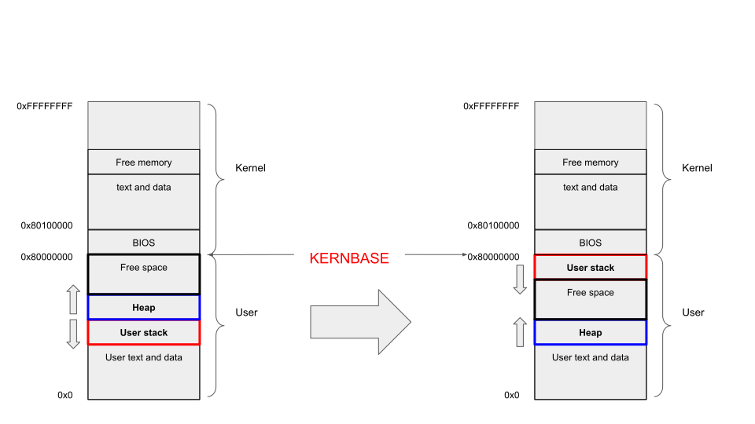

Lab 3 - Memory
Note
Hello all! The course evaluation for this quarter has opened now. Please give us a positive review if you feel you have learned something from the Lab sessions! You comments to the Labs are also welcome. Appreciate!
Accept Your Assignment
https://classroom.github.com/a/D7TkZLcL
Due: Sunday, Mar 16th, 2025, 23:59, PST
Background
In this Lab, we would like modify the memory layout about stack and heap in xv6-riscv to make it become closer to Linux. Specifically, you will move the stack in xv6 and implement a dynamic grow strategy for it.
Note: unless we specify explicitly, all addresses in the instruction refer to virtual addresses.
Memory Layout

The original memory layout of xv6 is on the left. Above 0x80000000, which is defined by KERNBASE constant is the kernel space memory and the one below it is user space memory.
What we care about is the user space memory. For user space, the block at the very bottom stores the code and static data, which is from the binary file loaded, e.g., hello-world program. The size of this block is determined statically whenever you execute a program by the binary size.
The other two parts are stack and heap, which is quite the same as you learned in you C/C++ class. In xv6, the allocation of stack is static as well. Specifically, the kernel will allocate two pages for stack in exec() system call. One page is for stack guard and another is for user stack.
See here if you don't remember what stack memory is.
For stack guard, this memory will be marked as user-unreadable after mapped. Therefore, any attempt accessing this memory will trigger a page fault. The guard is below the user stack.
1 2 3 4 5 6 7 8 9 10 11 12 | |
1 2 3 4 5 6 7 8 9 10 11 12 13 14 15 16 17 18 19 20 21 22 23 24 25 26 27 28 29 | |
Above is the critical code for creating user stack and stack guard in kernel/exec.c.
An every important function in this lab is uvmalloc standing for user virtual memory alloc. It's in kernel/vm.c. Even the comment for this function says, it will grow process from old sz to new sz, but the memory it allocated is not necessarily continuous. You can assume that this function is for creating PTEs and mapping the pages for a continuous memory space \([\text{oldsz}, \text{newsz})\).
1 2 3 4 5 6 7 8 9 10 11 12 13 14 15 16 17 18 19 20 21 22 23 24 25 26 27 28 29 30 | |
- Page round up, alignment by PGSIZE.
- Allocate a single physical page. This function will return the physical address for the page allocated.
- This function create a mapping between virtual address
aand physical addressmem. This function will create necessary PTEs.
The heap memory in xv6 is allocated dynamically. To figure out how this finishes, we need search from the user space malloc.
In umalloc.c, function malloc uses a simple strategy for heap allocation-Kernighan & Ritchie Malloc. It's a malloc function based on free list. It works as followings:
- Find a large enough node in the list.
- If there is, split this block into two-one is for allocation and another is for free.
- If there isn't, acquire more memory from the kernel.
In malloc(), the function for acquiring more memory is morecore() function. This function further calls sbrk() system call to allocate the memory.
sbrk doesn't have its own implementation, it is implemented in sys_sbrk(). It calls growproc() in kernel/proc.c and growproc() uses p->sz as its indicator for mapping the memory pages.
Your Tasks
Your tasks in lab 3 is as described in figure. The original memory layout in xv6, which is in the left should be modified to the one in the right. The key difference is the location of stack. In the left, the stack is at the bottom of the memory space, which is just above the text and data segment. In the right, however, it should be moved to the top of the user space, adjacent to the KERNBASE.
This modification brings an advantage, which is allowing the grow of stack. Currently, if you run a deep-recursive function or allocate a large buffer (> 1 page, 4KiB) on xv6, it will trigger the page fault because the stack size in xv6 is fixed to 1 page. Stack grow could enhance the flexibility and capability of xv6, which allows the kernel allocating more pages for stack in need.
Breakdown
- Change the memory layout of xv6, move the stack from the bottom of user space to the top.
- You should keep the stack guard.
- The stack memory should just below the
KERNBASE.
- Implement stack growth for xv6.
- Current default stack pages count is 1, which is defined by
USERSTACKinkernel/param.hand the number of stack pages will never change. You should keep the default value when creating the initial stack for process inexec(). - Your kernel need allocate extra pages when a page fault related to stack happens.
- The maximum pages for stack is defined by
RLIMIT_STACKinkernel/param.h. It's useful when you decide whether the page fault is related to stack.RLIMIT_STACKdoesn't include the guard page. BothUSERSTACKandRLIMIT_STACKare for user stack and exclude the guard page.
- Current default stack pages count is 1, which is defined by
- One extra system call is needed:
stackpg().- The system call need return the number of current process's user stack page. This number should ignore the guard page.
Step-by-Step Instructions
System call
The system call is the easiest to get started with. You also need another field (variable) defined in struct proc for tracking the number of stack pages.
Memory Layout
From exec()
The first thing is changing the stack allocation. Currently, as shown in exec(), uvmalloc() would alloc sz to sz + (USERSTACK+1)*PGSIZE as user stack and page guard, which causes the stack at the bottom of the user space (because sz is increasing from 0~ during the execution).
To uvmcopy()
The second is modifying uvmcopy()-the memory copy function happened in fork(). This function copies the memory when fork happens, but it only copies the memory from 0 to sz. Because our modified kernel doesn't inside this range anymore, we need change uvmcopy() function to copy the stack.
1 2 3 4 5 6 7 8 9 10 11 12 13 14 15 16 17 18 19 20 21 22 23 24 25 26 27 28 29 30 31 32 33 34 35 | |
- Copy from 0 to
sz.
To proc_freepagetable()
proc_freepagetable() will free the page table of a process in exit() and exec(). It's obvious you need it in exit(). In exec(), because you copied the page table from the parent process, exec() should create a new page table for the incoming program.
Current proc_freepagetable() only frees the memory from 0~sz. For the same reason, it doesn't contains our modified stack pages.
Fix Some Bugs
Another minor issue is the initial process. The initial process is special, defined in userinit() of kernel/proc.c. This function calls uvmfirst() to create its own memory.
1 2 3 4 5 6 7 8 9 10 11 12 13 14 15 | |
It only allocates single page for mapping the code stored in initcode[]. This is just a piece of code calling exec(/init) so that it doesn't allocate stack. If you freed the stack in proc_freepagetable(), you need to come up with a method handling this initial process.
Stack Growth
The stack growth happens when a page fault is detected. The page fault is captured as an exception, therefore, trapped by usertrap() in trap.c.
1 2 3 4 5 6 7 8 9 10 11 12 13 14 15 16 17 18 19 20 21 22 23 24 25 26 27 28 29 30 31 32 33 34 | |
- This is current fault handler of xv6, it just prints out an error and show you some details.
To know whether this is a page fault, we need to check scause (supervisor cause register) value.
scause value has two types-interrupt or exception, which are determined by the greatest bit of scause. If the greatest bit is 1, it's an interrupt; otherwise it's an exception.
When it's an exception:
- 0 - Instruction Address Misaligned
- 1 - Instruction Access Fault
- 2 - Illegal Instruction
- 3 - Breakpoint
- 4 - Load Address Misaligned
- 5 - Load Access Fault
- 6 - Store/AMO Address Misaligned
- 7 - Store/AMO Access Fault
- 8 - Environment Call from U-mode
- 9 - Environment Call from S-mode
- 12 - Instruction Page Fault
- 13 - Load Page Fault
- 15 - Store/AMO Page Fault
When it's an interrupt:
- 1 - Supervisor Software Interrupt
- 5 - Supervisor Timer Interrupt
- 9 - Supervisor External Interrupt
What we care about, is the exception 13 and 15. They are load & store page fault, therefore they might be a page fault related to stack. To further check whether it's a stack page fault, we also need to check the address.
The address attempted to write to is stored in stval() register. The distance between this address and KERNBASE should be less or equal to PGSIZE * RLIMIT_STACK to be considered as a stack page fault.
For a stack page fault, you need to allocate more pages as need to make the program running normally instead of exiting with page fault exception.
Grading Policy
10 pts in total:
- 2 pts for the attendance.
- 8 pts for the Lab code (as shown in the autograder). If you don't have a report submitted, your grade for the code will receive a 50% penalty.
We reserve the rights to grade your Lab according to your report in any situation. You can make a request for grading your Lab just according to your report if you cannot submit a runnable code. But we can't ensure we will give you any grade.
We may also grade your assignment just according to your report (which means we will give up your grade in autograder) if we find any SENSITIVE code in your work or we find some unmatched performance for you between the labs and lectures. To avoid this case, understand and following the instruction well, write the code by yourself and never share your code with others.
What to write in report
We don't expect a very detailed report. Keep it in 2-3 pages. You don't need to copy, paste and explain your code in the report, as we can find them in your repo.
Instead, you need to explain
- Which files you modified and the reason for the modification.
- Is there any difficulty you met and how do you solve them.
- For now, the
malloc()system call uses a very naive way for managing heap memory. What's its advantage and disadvantage. Which one is a better replacement to it? - For the stack page field you added in lab, which lock do you need to hold before accessing it and why?
You can add other things in the report as well if you like.
Test Program
1 2 3 4 5 6 7 8 9 10 11 12 13 14 15 16 17 18 19 20 21 22 23 24 25 26 27 28 29 30 31 32 33 34 35 36 37 38 39 40 41 42 43 44 45 46 47 48 49 50 51 52 53 54 55 56 57 58 59 60 61 62 63 64 65 66 67 68 69 70 71 72 73 74 75 76 77 78 79 80 81 82 83 84 85 86 87 88 89 90 91 92 93 94 95 96 97 98 99 100 101 102 103 104 105 106 107 108 109 110 111 112 113 114 115 116 117 118 119 120 121 122 123 124 125 126 127 128 129 130 131 132 133 134 135 136 137 138 139 140 141 142 143 144 145 146 147 148 149 150 151 152 153 154 155 | |